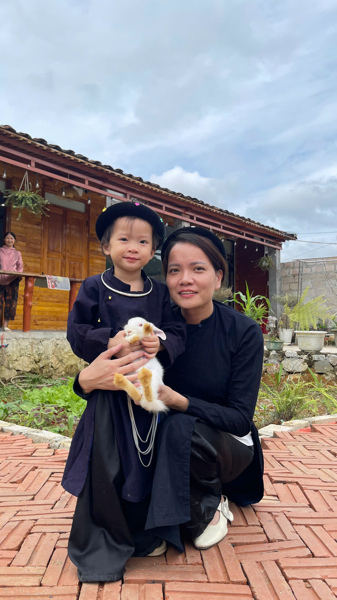

和Dâu Tây一起回外婆家的一天
有些日子，不必走得很远。 回到外婆家，让孩子在院子里玩耍， 陪伴亲爱的家人，就足以留下美好的回忆。

回外婆家探望长辈，让我们一家暂时放下平日忙碌的生活， 有机会好好陪伴彼此。对大人来说，这是一次回家探亲； 而对Dâu Tây来说，周围的一切都充满了新鲜感， 值得她慢慢观察和探索。
在外婆家，Dâu Tây可以在院子里玩耍，看看花园， 感受日常生活中那些熟悉而亲切的小事。 这些时刻不需要刻意安排，只要及时记录下来， 就能成为童年里可爱的回忆。

童年，藏在平凡的小事里
院子的一角、花园里的一条小路， 或者与家人一起玩耍的片刻， 都能成为值得珍藏的照片。 也许长大后的Dâu Tây不会记得那一天的每个细节， 但我们可以陪她一起翻看照片， 告诉她小时候曾经度过的美好时光。


平凡的一天，值得珍藏的回忆
这次回外婆家只有短短一天， 但照片帮我们留住了许多细小而珍贵的瞬间。 等Dâu Tây长大以后，这些照片会让她重新看到自己曾经玩耍的地方， 也会让她记起那些一直爱着她、陪伴着她的家人。
Nhà Mình Journal 记录这样的日子， 不是因为它们有多么特别， 而是因为它们是孩子成长旅程中温柔的一部分。
← 返回 Nhà Mình Journal 首页